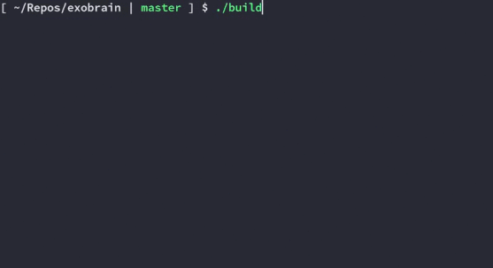

The concept of an exobrain was originally inspired by beepb00p
Editing
Most of the time, I edit this by searching for a file/some text I want to modify:
alias exo='cd "${REPOS}/exobrain"; ranger --cmd="shell ./exosearch"'
That alias changes my directory to the root exobrain directory, opens ranger (my file manager) and runs exosearch: me fuzzy searching my exobrain
me fuzzy searching my exobrain
When I pick some text, that opens my text editor to that line in the file. Once I’m done, I have key binds set up in ranger that allow me to call the push command and update the remote website with any changes made.
exosearch uses fzf. By default, it searches text and opens the chosen line in my editor. The -o flag instead searches for links, and open the corresponding URL in my browser.
alias exoo='cd "${REPOS}/exobrain"; ranger --cmd="shell ./exosearch -o"'
(flags for the underlying exosearch_cmd.go)
Search my exobrain for something!
By default, This searches text and opens the chosen line in your editor.
-exobrain-dir string
root exobrain directory (default "/home/sean/Repos/exobrain")
-exobrain-url string
root exobrain URL (default "https://exobrain.sean.fish")
-links
Search links instead of text
-url
Print the URL instead of opening the file
This wrapper script handles/wraps the 'internal' go flags
Pass the -o flag to search for links instead
build demoThis is built using pandoc to convert markdown files to html, using pandoc flavored markdown, which allows you to use its template language, see the conditionals in the template
The build script finds a file named README.md in each directory and converts it to the corresponding index.html
Parts of the dynamic feed/blog/projects pages are built using my pmark script, which uses code blocks to generate markdown, from within the markdown itself.
Since this is pretty unstructured, this does some tag validation on the meta pandoc tags (sometimes called ‘yaml frontmatter’), using $meta-json$ to make sure I’m not missing titles/dates for the markdown files. (See pandoc notes and the exoharden_cmd.go file)
This uses a variety of shell tools to build this, listed in build:
Hosting
This is hosted straight from the git repo using netlify with little customization. I followed these steps from the netlify docs to set that up, required me to remove the subdomain info and re-add it at netlify.com; worked after about 30 minutes or so.
rwx.gg
A lot of this was taken from rwx.gg, I’ve modified some of the CSS (particularly media queries) and JS to add bookmark links to headings, changed how the header works, along with completely modifying the content. See the goal for readme.world, and rwx.gg’s license. Similarly to rwx.gg, the code and content on this site is licensed under CC-SA. So you’re free to take my repo and modify it to create your own site, as long as you keep the same license.